Concentrating Solar Thermal Systems
Simulation and experimental study for applications at intermediate to medium temperatures
Orestis Panagopoulos - Kontostaulakis
Design point


SCO1-parabolic

SCO1-parabolic: Linear absorber path

SCO1-parabolic: Absorber equation, $max(\gamma)$

SCO1-parabolic: Equation test

SCO1-CPC

SCO1-CPC: Linear absorber path

SCO1-CPC: Linear absorber path, $max(\gamma)$
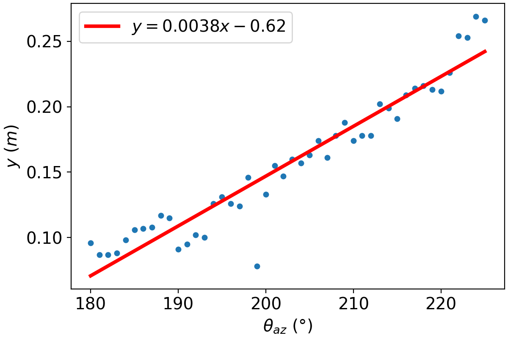
SCO1-CPC: Equation test

SCO1-CPC: Non-linear absorber path


SCO1-CPC: Non-linear absorber path, thresholds


SCO1-CPC: Non-linear absorber path, mean positions


SCO1-CPC: Non-linear absorber path, $\gamma \gt 0.6$ positions
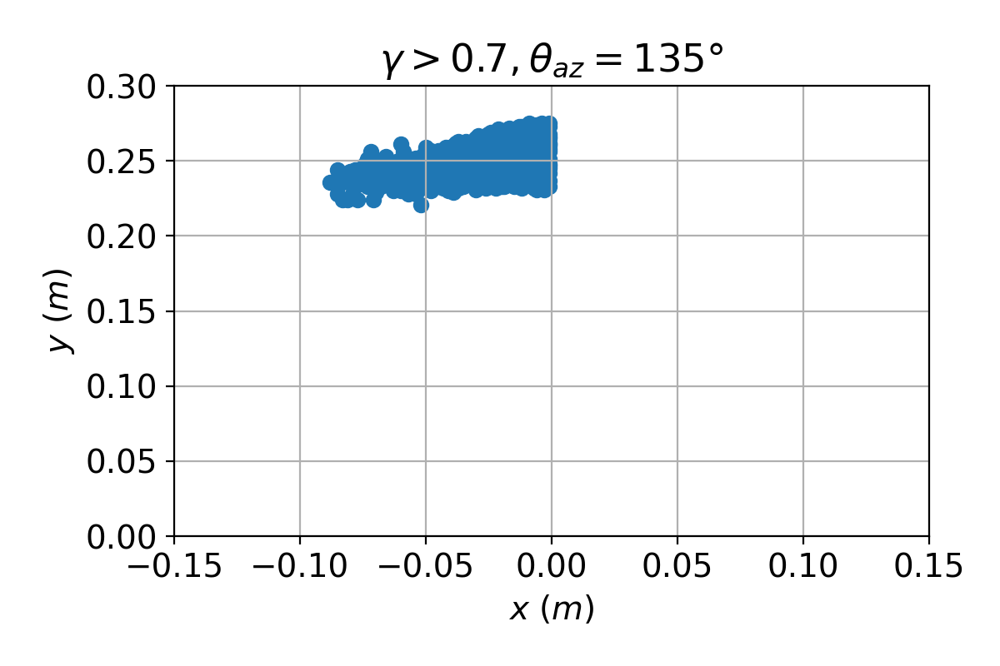


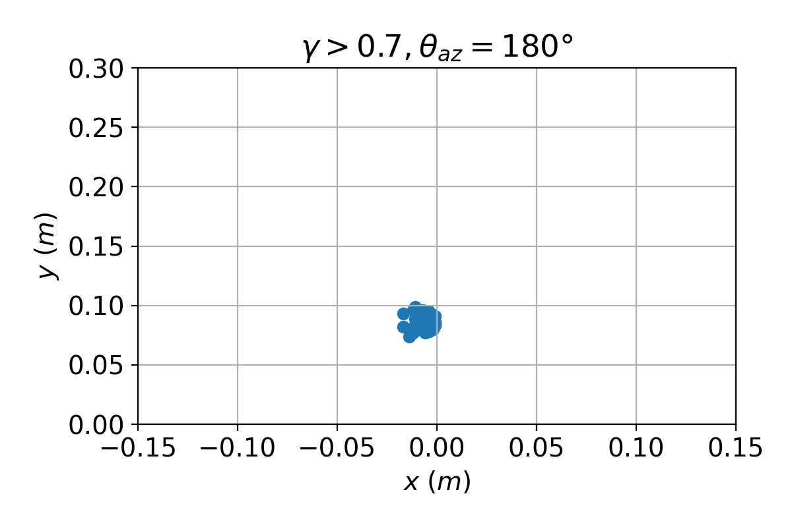
SCO1-CPC: Circular absorber path


SCO1-CPC: Circular absorber path, $\gamma \gt 0.7$
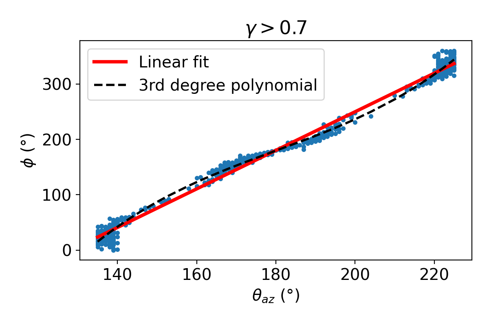SCO1-CPC: Circular absorber path, linear vs polynomial


SCO4: Micro-mirror array

- 7 x 11 mirror array in landscape orientation
- 0.14 x 0.14 cm mirror facet
- 2 mm spacing between mirrors
- 0.25 x 0.25 cm receiver
- 1.5 m receiver height (above mirror array center)
Solstice: exported quantities
$$n = \frac{F_a}{F_p}$$
$$F_a = F_p \cdot C_f - L_{total}$$
$$F_p = DNI \cdot S_m$$
$$L_{total} = ( L_s + L_m + L_a + L_r )$$
$$F_a = F_p \cdot C_f - L_{total}$$
$$F_p = DNI \cdot S_m$$
$$L_{total} = ( L_s + L_m + L_a + L_r )$$
- $C_f$ - Cosine factor: the average cosine of the angle between the incoming solar radiation and the normal of primary reflectors.
- $F_p$ - Potential flux: the flux that would be absorbed by the receiver if all the reflectors were optimally oriented.
- $L_m$ - Missing Losses: the flux that reaches primary reflectors, is reflected but is not finally absorbed by the receivers.
SCO4: Absorbed flux

SCO4: Losses
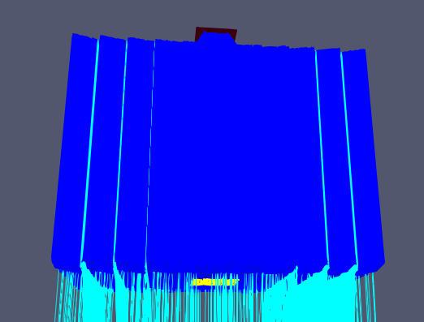
$\theta_z = 0^{\circ}$
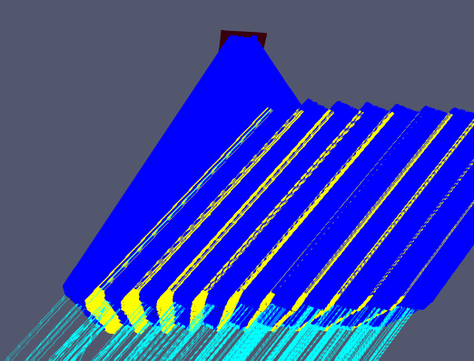
$\theta_z = 40^{\circ}$
SCO4: Shadow losses
Transversal
Longitudinal
SCO4: Missing Losses

SCO4: Enclosure & support effects
- Mirror box height: 20 cm
- Mirror box spacing: 1 cm from mirrors
- Receiver frame width: 5 cm
- Receiver support width: 25 cm
SCO4: Enclosure & support effects, $n$
Transversal
Longitudinal
SCO4: Optimal absorber position investigation
SCO4: Optimal absorber position - enclosure & support
SCO4: Geometry optimization, wider mirror spacing
SCO4: Geometry optimization, wider enslosure
SCO4: Flux distribution - ideal
 $\theta_z = 0^{\circ}$
$\theta_z = 0^{\circ}$
$\theta_z = 45 ^{\circ}$ transversal
SCO4: Flux distribution - errors
- Pillbox sun shape 4.65 mrad
- Mirror surface slope error 7 mrad
 $\theta_z = 0^{\circ}$
$\theta_z = 0^{\circ}$
 $\theta_z = 45 ^{\circ}$ transversal
$\theta_z = 45 ^{\circ}$ transversal
SCO4: Real data test, angular distribution
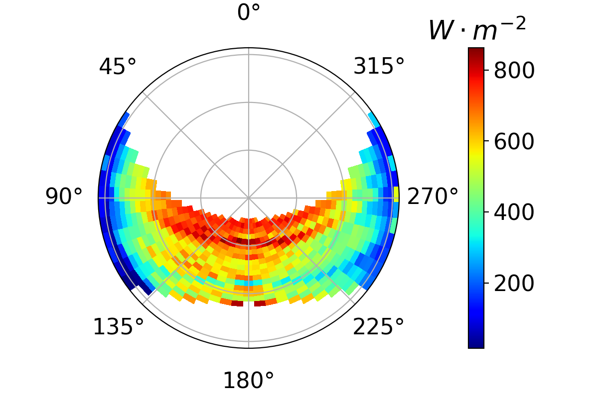
Input: $DNI = \frac{GHI - DHI}{\cos{\theta_z}}$
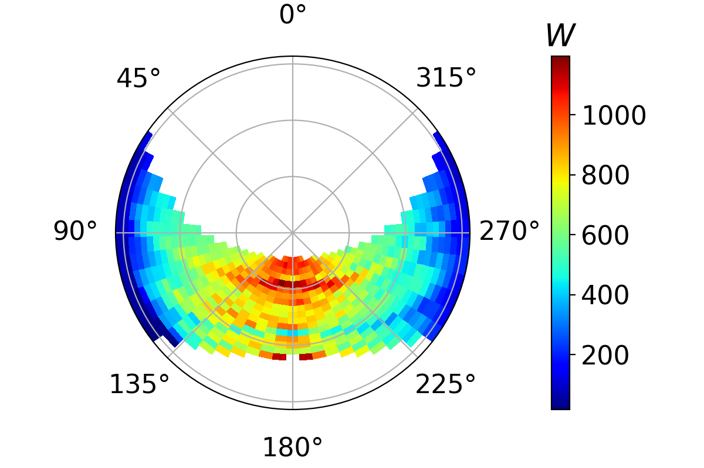
Output: $F_a$
SCO4: Real data test, timeseries
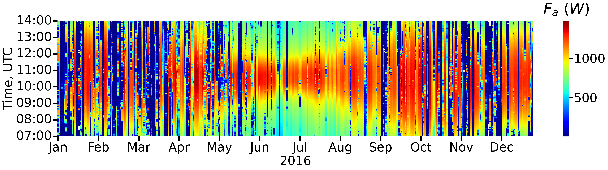SCO4: Real data test, conslusions
- Stable maximum performance for $\pm1.5$ hours around solar noon during the whole year.
- Extended time range of efficient operation for higher latitudes
- Reduced $F_a$ in summer morning & afternoon
- Larger mirror spacing and enclosure recommended
Absorber temperature distribution
- Simplified overall heat loss coefficient (convective) $U = \alpha_1 + \alpha_2 \cdot ( T_{abs} - T_{amb})$
- $T_{amb} = 30 \ ^{\circ}C$
- Boundary condition $T = 150 \ ^{\circ}C$
| Case | $\alpha (W \cdot m^{-2} \cdot K^{-1})$ | $T_{max} (^{\circ} C)$ | $\dot{Q}_{loss} (W)$ | $\frac{\dot{Q}_{usable}}{\dot{Q}_{in}} (\%)$ |
|---|---|---|---|---|
| 1 | $\alpha_1 = 4, \alpha_2=0.02$ | 226.90 | 993.43 | 95.9 |
| 2 | $\alpha_1 = 6, \alpha_2=0.03$ | 225.96 | 972.73 | 93.9 |
Basic equations
$$n = \frac{Q_u}{Q_r}$$$$Q_u = \dot{m} C_p (T_{out} - T_{in})$$
$$Q_r = I \cdot A$$
$$n = F_R(\tau \alpha) - F_R U_L\frac{T_{in} - T_{amb}}{IA}$$
ISO equation
\[ \begin{split} \dot m C_p \frac{(T_{out} - T_{in})}{A} & = F'\tau \alpha K_{dir} I_{dir} + F'\tau \alpha K_{dfu} I_{dfu} - c_1 (T_m - T_{amb}) \\ & - c_2 (T_m - T_{amb})^2 - c_3 v_w (T_m - T_{amb}) - c_6 v_w I_{glb} \\ & + c_4 [\epsilon_{longwave} - \sigma_{SB} (T_{amb}+273.15)^4] - c_5 \frac{dT_m}{dt} \end{split} \]
$$T_m = \frac{T{out} + T{in}}{2}$$ $$F' \tau \alpha = \frac{n_0}{0.85K_{dir}(15 ^{\circ} ) + 0.15 K_{dfu}}$$ $$K_{dir} = K_b(\theta_l) \cdot K_b(\theta_t)$$ \begin{split} n_0 & = F' (\tau \alpha)_{rec} \cdot (\tau^2 \rho \gamma)_{con} \\ & = n_{0,rec} \cdot (\tau^2 \rho \gamma)_{con} \end{split} $$c_1 = \alpha_1 \frac{A_{rec}}{A_{con}}, \quad c_2 = \alpha_2 \frac{A_{rec}}{A_{con}}, \quad c_5 = m_{th} \frac{A_{rec}}{A_{con}}$$
Modified ISO equation
Removing zero-terms:$$\dot m C_p \frac{(T_{out} - T_{in})}{A} = F'\tau \alpha K_{dir} I_{dir} - c_1 (T_m - T_{amb}) - c_2 (T_m - T_{amb})^2 - c_5 \frac{dT_m}{dt}$$
Substituting $T_{out} = 2T_m -Tin$ and solving for $\frac{dT_m}{dt}$ we get:
$$ \frac{dT_m}{dt} = \frac{1}{c_5} [F'\tau \alpha K_{dir} I_{dir} - c_1 (T_m - T_{amb}) - c_2 (T_m - T_{amb})^2 -2 \frac{\dot m C_p}{A} (T_{m} - T_{in})]$$
Thermal model example parameters
| Parameter | Value | Units |
|---|---|---|
| $A$ | 1 | $m^2$ |
| $F'_{\tau\alpha}$ | 0.507 | - |
| $c_1$ | 0.7153 | $W \cdot m^{-2} \cdot K^{-1}$ |
| $c_2$ | 0.00339 | $W \cdot m^{-2} \cdot K^{-1}$ |
| $c_5$ | 675 | $J \cdot m^{-2} K^{-1}$ |
| $\dot m$ | 0.022 | $kg \cdot s^{-1}$ |
| $T_{amb}$ | 300 | K |
| $T_{in}$ | 290 | K |
| $C_p$ | 4184 | $J \cdot kg ^{-1} K^{-1}$ |
| $I_{dir0}$ | 800 | $W \cdot m^{-1}$ |
| $t_t$ | 40 | s |
| $t_{tot}$ | 60 | s |
System response


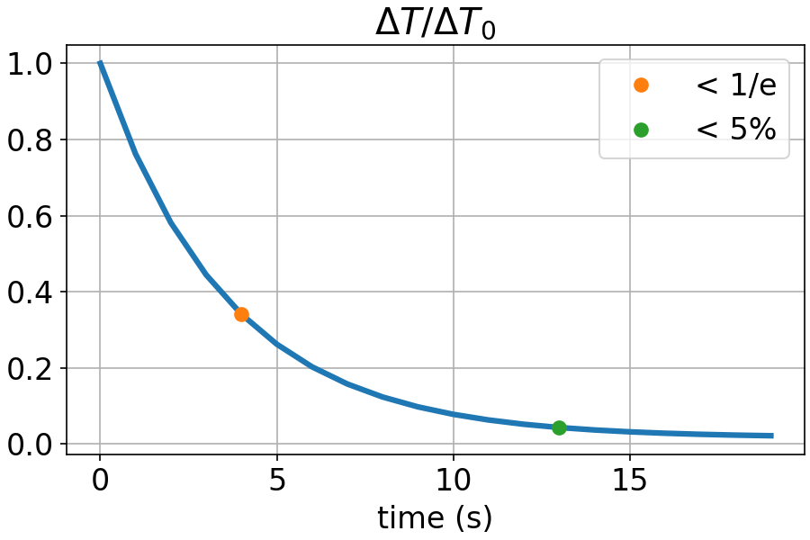
Weather data example

Annual simulations
Experimental setup
SCO4 prototype
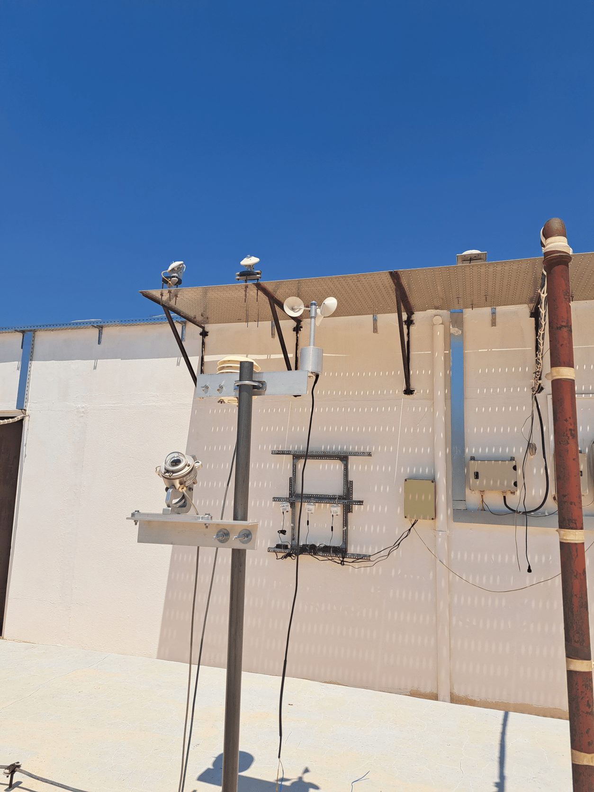
Automatic Data Acquisition System (ADAS)
General guidelines
- No data should be stored in the datalogger. Use SQL for data integrity and convenient access.
- Data transfer should be as fast as possible.
- The measurement parameters should be easily configured.
- Low-maintenance application back-end.
Software requirements
- Cost effectiveness: Open source.
- Reliability: Proven components and communication protocols.
- Data accessibility: Real-time data view.
- Easy maintenance: Little to no coding.
- Scalability: Support multiple nodes.
- Versatility: Infrastructure for different nodes, centralized and decentralized.
Hardware requirements
- Cost effectiveness: Low-cost, high-quality measurements.
- Availability: Off-the-shelf components, no specialized devices.
- Versatility: Interfacing with high-quality sensors and lower-specs sensors.
ISO 9806:2017 requirements
| Quantity | Maximum uncertainty |
|---|---|
| Solar irradiance | $\pm 20 \ W \cdot m^{-2}$ |
| Outlet - inlet temperature | $\pm 1\%$ |
| Ambient temperature | $\pm 0.0 \ K$ |
| Mass flow rate | $\pm 1 \ \%$ |
| Wind speed | $\pm 0.5 \ m \cdot s^{-1}$ |
| Specific humidity (mixing ratio) | $\pm 1 \ g \cdot kg^{-1} $ |
ADAS: Application structure
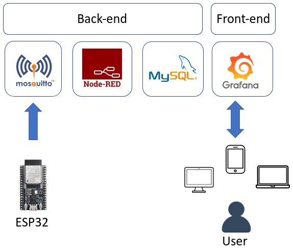
Node-RED flow
ADAS: workflow

ADAS: class diagram
ADAS: test case
ADAS: data visualization
Experimental procedure
SCO4: characterization
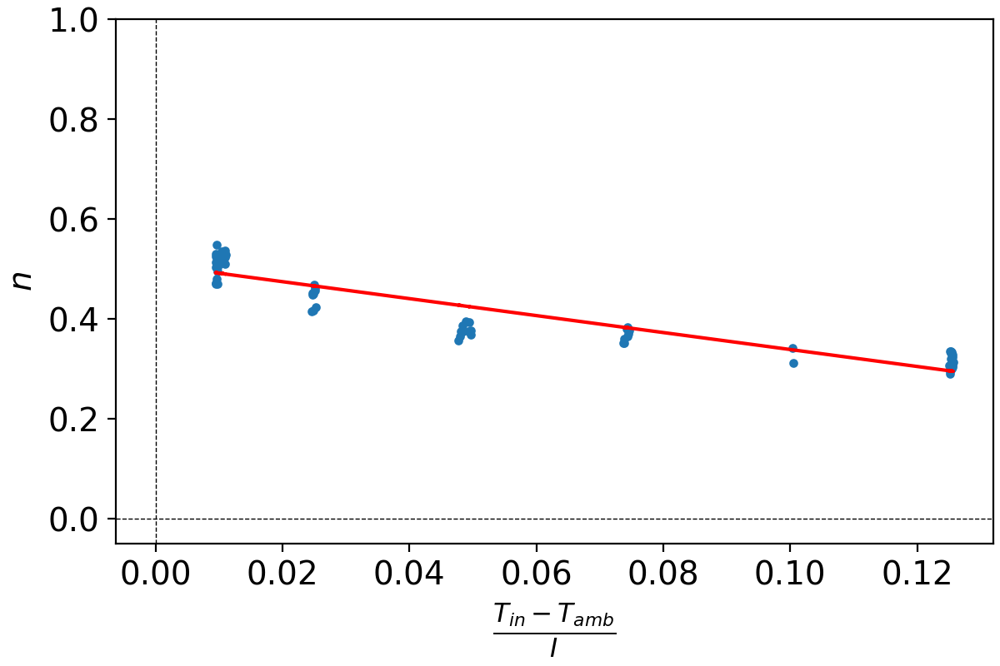 $$n = -1.08 (\pm 0.08) \frac{T_{in} - T_{amb}}{I} + 0.392 (\pm 0.005)$$ $R=-0.843$ , p-value $\lt 0.05$ over 80 pointsSCO4: model validation

$$T_{out, pred} = 0.989 (\pm 0.001) T_{out, meas} + 5.7 (\pm 0.1)$$
$R=0.999$ , p-value $\lt 0.05$ over 80 points
$$MBE=4.75$$
$$RMBE=5.87$$
$$RMSE=4.81$$
SCO4: $T_{out}$ overestimation cause
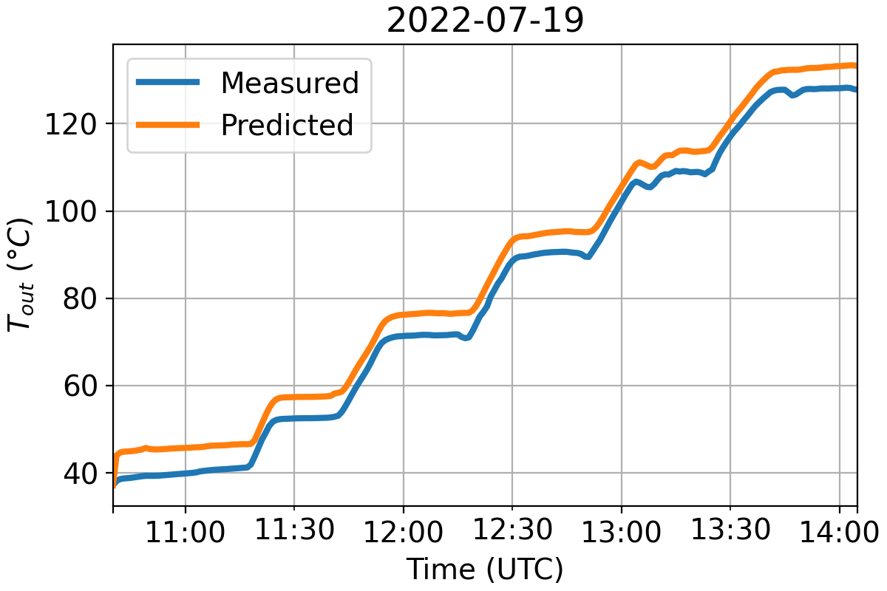